CODING AGENTS AS PIXEL WORLD MODELS
traex/GPT-6.1-Sol · common50_0003
点击播放 · 原生 RGB 像素
逐轮保存的候选
回放视频、检查图与代码变化。
每份候选均可单独播放。实际图片检查记录在下方工具轨迹中。
候选 01播放与检查图
点击播放 · 原生 RGB 像素
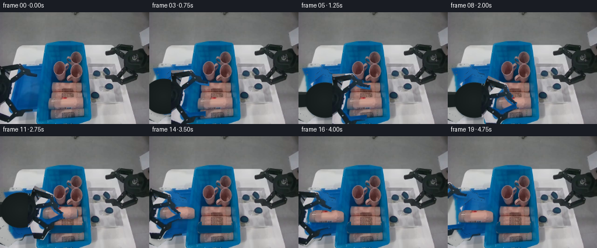
展开代码变化
--- 上一保存版本
+++ 本次保存版本
@@ -0,0 +1,154 @@
+from pathlib import Path
+import numpy as np
+from PIL import Image, ImageDraw, ImageFilter
+import artifact_io
+
+ROOT=Path(__file__).resolve().parent
+im=Image.open(ROOT/'first_frame.png').convert('RGB')
+A=np.asarray(im).copy(); W,H=im.size; S=4
+
+def poly_mask(points):
+ m=Image.new('L',(W*S,H*S)); ImageDraw.Draw(m).polygon([(int(x*S),int(y*S)) for x,y in points], fill=255)
+ return np.asarray(m.resize((W,H),Image.Resampling.LANCZOS)).astype(float)/255
+
+def region(poly):
+ m=poly_mask(poly)
+ # Preserve the openings in the mechanical links.
+ v=A.max(2)
+ dark=np.clip((99-v)/24,0,1)
+ return m*dark
+
+upper=region([(0,88),(35,87),(44,96),(53,99),(54,105),(65,107),(65,115),(50,113),(40,108),(21,123),(12,122),(0,108)])
+lower=region([(0,145),(15,148),(31,161),(59,158),(59,167),(42,169),(38,177),(28,180),(14,191),(0,183)])
+palm=region([(0,104),(8,106),(17,117),(23,127),(22,141),(17,150),(10,157),(0,163)])
+# Preserve metallic fasteners within the photographed links.
+for arr,pts in [(upper,[(34,92),(42,102),(21,115)]),(lower,[(15,161),(14,185)])]:
+ for x,y in pts:
+ yy,xx=np.mgrid[:H,:W]; arr[((xx-x)**2+(yy-y)**2)<2.1]=1
+oldmask=np.maximum.reduce([upper,lower,palm])
+
+# Restore only the small regions revealed by the departing left hand.
+# The tray is the same rigid tray, with its observed rim and interior texture.
+yy,xx=np.mgrid[:H,:W]
+bg=A.astype(float).copy()
+fill=np.empty_like(bg)
+fill[:]=np.stack([203-0.17*yy,205-0.17*yy,204-0.17*yy],axis=-1)
+# Area outside the fixed work surface.
+tableedge=28-(yy-60)*.39
+outside=xx<tableedge
+floor=np.stack([123-.08*yy,125-.08*yy,122-.08*yy],axis=-1)
+fill[outside]=floor[outside]
+traypoly=poly_mask([(6,96),(77,90),(68,170),(25,176),(15,161),(14,116)])>.5
+# Sample the existing unobstructed blue floor, not a synthetic texture.
+for y in range(H):
+ for x in range(W):
+ if traypoly[y,x]:
+ sx=int(np.clip(45+(x-40)*.27,35,61)); sy=int(np.clip(y,116,156))
+ fill[y,x]=A[sy,sx]
+# The left rim runs behind the occluding wrist.
+rim=(np.abs(xx-(16+(yy-135)*.12))<2)&(yy>=108)&(yy<166)
+fill[rim]=[0,108,153]
+# Solve a local smooth continuation around the outline, seeded with the known surface.
+known=oldmask<.03
+work=np.where(known[:,:,None],A,fill)
+for k in range(110):
+ neighbor=(np.roll(work,1,0)+np.roll(work,-1,0)+np.roll(work,1,1)+np.roll(work,-1,1))*.25
+ neighbor[:,0]=(work[:,1]+np.roll(work[:,0],1,0)+np.roll(work[:,0],-1,0))/3
+ work=np.where(known[:,:,None],A,.84*neighbor+.16*fill)
+bg=Image.fromarray(np.clip(A*(1-oldmask[:,:,None])+work*oldmask[:,:,None],0,255).astype('uint8'))
+
+# Photographed personal-care bottle, which retains its texture, orientation and shape.
+bottlepoly=[(88,147),(94,145),(130,145),(139,147),(143,150),(144,159),(143,164),(138,166),(87,166),(83,163),(83,153),(85,149)]
+bm=poly_mask(bottlepoly)
+bottle=Image.fromarray(np.dstack([A,(bm*255).astype('uint8')]),'RGBA')
+# Restore bin floor and the back edge of the occluded bottle after lifting.
+clean=np.asarray(bg).copy()
+for y in range(144,169):
+ for x in range(81,146):
+ if bm[y,x]>.001:
+ if y<153 and x>=90 and x<=140:
+ sy=min(146,139+int((y-144)*.75))
+ val=A[sy,x].astype(float)
+ val*=1-.035*max(0,y-148)
+ else:
+ sx=148 if x>123 else 79
+ val=A[min(y,166),sx].astype(float)
+ val=val*.77
+ clean[y,x]=(A[y,x]*(1-bm[y,x])+val*bm[y,x]).astype('uint8')
+clean=Image.fromarray(clean)
+
+# Full wrist continuation: only the previously off-screen part is reconstructed.
+CW=356; OFF=100
+body=Image.new('RGBA',(CW*S,H*S))
+d=ImageDraw.Draw(body)
+def ellipse(box,fill): d.ellipse(tuple(int(z*S) for z in box),fill=fill)
+def polygon(p,fill):d.polygon([(int((x+OFF)*S),int(y*S)) for x,y in p],fill=fill)
+polygon([(-105,118),(-34,119),(-26,125),(-27,143),(-103,149)],(23,30,30,255))
+polygon([(-103,118),(-35,119),(-35,123),(-103,124)],(43,49,48,255))
+for r in range(34,0,-1):
+ c=int(26+7*(1-r/34)); ellipse((OFF-13-r,133-r*.89,OFF-13+r,133+r*.89),(c-5,c+2,c+2,255))
+# An observed-only overlay keeps the right face exactly photographic.
+bodyarr=np.asarray(body.resize((CW,H),Image.Resampling.LANCZOS)).copy()
+bodyarr[:,OFF:OFF+W]=np.dstack([A,(palm*255).astype('uint8')]) + 0 # replace with photographed right half
+# Above assignment wipes right synthetic geometry beyond source; this is intended.
+body=Image.fromarray(bodyarr,'RGBA').resize((CW*S,H*S),Image.Resampling.BICUBIC)
+
+def make_sprite(mask):
+ out=Image.new('RGBA',(CW,H)); out.paste(Image.fromarray(np.dstack([A,(mask*255).astype('uint8')]),'RGBA'),(OFF,0))
+ return out.resize((CW*S,H*S),Image.Resampling.BICUBIC)
+top=make_sprite(upper); bottom=make_sprite(lower)
+
+# Rigid affine motion of each hinge assembly, around its fixed wrist attachment.
+def transform(sprite,dx,dy,angle=0,pivot=(0,0)):
+ th=np.deg2rad(angle); c=np.cos(th); s=np.sin(th)
+ px,py=pivot
+ # Inverse mapping from final screen position to source texture coordinates.
+ a,b=c,s; dd,e=-s,c
+ tx=(px-c*(px+dx)-s*(py+dy)+OFF)*S
+ ty=(py+s*(px+dx)-c*(py+dy))*S
+ return sprite.transform((W*S,H*S),Image.Transform.AFFINE,(a,b,tx,dd,e,ty),Image.Resampling.BICUBIC)
+
+def bottle_transform(dx,dy):
+ return bottle.resize((W*S,H*S),Image.Resampling.BICUBIC).transform((W*S,H*S),Image.Transform.AFFINE,(1,0,-dx*S,0,1,-dy*S),Image.Resampling.BICUBIC)
+
+def smooth(t):return t*t*(3-2*t)
+def lerp(a,b,t): return a+(b-a)*smooth(t)
+
+def state(i):
+ # approach; close; lift; transfer; lower; release; withdraw
+ if i<=5:
+ t=i/5;return lerp(0,58,t),lerp(0,18,t),0,0,0,0,False
+ if i<=8:
+ t=(i-5)/3;return 58,18,lerp(0,27,t),lerp(0,-19,t),0,0,False
+ if i<=10:
+ t=(i-8)/2;by=lerp(0,-24,t);return 58,18+by,27,-19,0,by,True
+ if i<=14:
+ t=(i-10)/4;bx=lerp(0,-65,t);return 58+bx,-6,27,-19,bx,-24,True
+ if i<=15:
+ t=i-14;by=lerp(-24,-18,t);return -7,18+by,27,-19,-65,by,True
+ if i<=17:
+ t=(i-15)/2;return -7,0,lerp(27,0,t),lerp(-19,0,t),-65,-18,True
+ t=(i-17)/2;return lerp(-7,-31,t),lerp(0,-8,t),0,0,-65,-18,True
+
+frames=[A.copy()]
+for i in range(1,20):
+ dx,dy,ta,ba,bx,by,moved=state(i)
+ canvas=(clean if moved else bg).resize((W*S,H*S),Image.Resampling.BICUBIC).convert('RGBA')
+ obj=bottle_transform(bx,by) if moved else None
+ if obj:
+ shadow=Image.new('RGBA',canvas.size,(0,0,0,0))
+ alpha=obj.getchannel('A').filter(ImageFilter.GaussianBlur(1.5*S))
+ # Soft contact shadow becomes detached slightly during the lifting phase.
+ alpha=alpha.point(lambda z:int(z*.23))
+ shifted=Image.new('L',canvas.size); shifted.paste(alpha,(2*S,3*S))
+ shadow.putalpha(shifted);canvas=Image.alpha_composite(canvas,shadow)
+ canvas=Image.alpha_composite(canvas,obj)
+ handparts=[transform(body,dx,dy),transform(top,dx,dy,ta,(0,114)),transform(bottom,dx,dy,ba,(0,151))]
+ hand=Image.new('RGBA',canvas.size)
+ for part in handparts:hand=Image.alpha_composite(hand,part)
+ hs=hand.getchannel('A').filter(ImageFilter.GaussianBlur(2*S)).point(lambda z:int(z*.17))
+ sh=Image.new('RGBA',canvas.size,(0,0,0,0)); shifted=Image.new('L',canvas.size);shifted.paste(hs,(2*S,4*S));sh.putalpha(shifted)
+ canvas=Image.alpha_composite(canvas,sh);canvas=Image.alpha_composite(canvas,hand)
+ frames.append(np.asarray(canvas.convert('RGB').resize((W,H),Image.Resampling.LANCZOS)))
+frames=np.stack(frames).astype(np.uint8)
+artifact_io.save(frames,ROOT)
候选 02播放与检查图
点击播放 · 原生 RGB 像素

展开代码变化
--- 上一保存版本
+++ 本次保存版本
@@ -18,14 +18,20 @@
dark=np.clip((99-v)/24,0,1)
return m*dark
-upper=region([(0,88),(35,87),(44,96),(53,99),(54,105),(65,107),(65,115),(50,113),(40,108),(21,123),(12,122),(0,108)])
-lower=region([(0,145),(15,148),(31,161),(59,158),(59,167),(42,169),(38,177),(28,180),(14,191),(0,183)])
-palm=region([(0,104),(8,106),(17,117),(23,127),(22,141),(17,150),(10,157),(0,163)])
-# Preserve metallic fasteners within the photographed links.
-for arr,pts in [(upper,[(34,92),(42,102),(21,115)]),(lower,[(15,161),(14,185)])]:
- for x,y in pts:
- yy,xx=np.mgrid[:H,:W]; arr[((xx-x)**2+(yy-y)**2)<2.1]=1
+# Each visible link is cut out on its own, excluding all triangle openings.
+upperpolys=[[(0,91),(33,88),(37,91),(35,96),(6,102),(0,101)],
+ [(2,98),(9,100),(15,107),(13,109),(5,104)],
+ [(10,119),(36,99),(42,100),(43,104),(19,125),(13,124)],
+ [(31,91),(35,90),(44,99),(46,103),(53,106),(64,107),(63,111),(51,111),(41,107),(37,101)]]
+lowerpolys=[[(8,148),(14,146),(29,162),(39,162),(55,160),(57,160),(57,166),(42,167),(37,175),(28,177)],
+ [(0,173),(16,180),(25,172),(29,173),(29,180),(15,190),(0,185)]]
+palmpoly=[(0,103),(6,106),(13,113),(19,120),(22,128),(22,138),(18,149),(11,156),(0,162)]
+upper=np.maximum.reduce([poly_mask(p) for p in upperpolys])
+lower=np.maximum.reduce([poly_mask(p) for p in lowerpolys])
+palm=poly_mask(palmpoly)
oldmask=np.maximum.reduce([upper,lower,palm])
+# Extend removal by one pixel to eliminate antialiased old silhouettes.
+oldmask=np.asarray(Image.fromarray((oldmask*255).astype('uint8')).filter(ImageFilter.MaxFilter(3))).astype(float)/255
# Restore only the small regions revealed by the departing left hand.
# The tray is the same rigid tray, with its observed rim and interior texture.
@@ -86,7 +92,11 @@
polygon([(-105,118),(-34,119),(-26,125),(-27,143),(-103,149)],(23,30,30,255))
polygon([(-103,118),(-35,119),(-35,123),(-103,124)],(43,49,48,255))
for r in range(34,0,-1):
- c=int(26+7*(1-r/34)); ellipse((OFF-13-r,133-r*.89,OFF-13+r,133+r*.89),(c-5,c+2,c+2,255))
+ c=int(25+8*(1-r/34)); ellipse((OFF-13-r,133-r*.89,OFF-13+r,133+r*.89),(c-5,c+2,c+2,255))
+# Subtle casing ring, matching the narrow highlight already visible at frame left.
+for r,col in [(31,(30,39,38,255)),(29,(20,29,28,255)),(27,(23,32,31,255))]:
+ ellipse((OFF-13-r,133-r*.89,OFF-13+r,133+r*.89),col)
+
# An observed-only overlay keeps the right face exactly photographic.
bodyarr=np.asarray(body.resize((CW,H),Image.Resampling.LANCZOS)).copy()
bodyarr[:,OFF:OFF+W]=np.dstack([A,(palm*255).astype('uint8')]) + 0 # replace with photographed right half
@@ -119,36 +129,36 @@
if i<=5:
t=i/5;return lerp(0,58,t),lerp(0,18,t),0,0,0,0,False
if i<=8:
- t=(i-5)/3;return 58,18,lerp(0,27,t),lerp(0,-19,t),0,0,False
+ t=(i-5)/3;return 58,18,lerp(0,20,t),lerp(0,-16,t),0,0,False
if i<=10:
- t=(i-8)/2;by=lerp(0,-24,t);return 58,18+by,27,-19,0,by,True
+ t=(i-8)/2;by=lerp(0,-24,t);return 58,18+by,20,-16,0,by,True
if i<=14:
- t=(i-10)/4;bx=lerp(0,-65,t);return 58+bx,-6,27,-19,bx,-24,True
+ t=(i-10)/4;bx=lerp(0,-65,t);return 58+bx,-6,20,-16,bx,-24,True
if i<=15:
- t=i-14;by=lerp(-24,-18,t);return -7,18+by,27,-19,-65,by,True
+ t=i-14;by=lerp(-24,-18,t);return -7,18+by,20,-16,-65,by,True
if i<=17:
- t=(i-15)/2;return -7,0,lerp(27,0,t),lerp(-19,0,t),-65,-18,True
+ t=(i-15)/2;return -7,0,lerp(20,0,t),lerp(-16,0,t),-65,-18,True
t=(i-17)/2;return lerp(-7,-31,t),lerp(0,-8,t),0,0,-65,-18,True
frames=[A.copy()]
for i in range(1,20):
dx,dy,ta,ba,bx,by,moved=state(i)
- canvas=(clean if moved else bg).resize((W*S,H*S),Image.Resampling.BICUBIC).convert('RGBA')
+ canvas=(clean if moved else bg).convert('RGBA')
obj=bottle_transform(bx,by) if moved else None
if obj:
- shadow=Image.new('RGBA',canvas.size,(0,0,0,0))
- alpha=obj.getchannel('A').filter(ImageFilter.GaussianBlur(1.5*S))
- # Soft contact shadow becomes detached slightly during the lifting phase.
- alpha=alpha.point(lambda z:int(z*.23))
- shifted=Image.new('L',canvas.size); shifted.paste(alpha,(2*S,3*S))
- shadow.putalpha(shifted);canvas=Image.alpha_composite(canvas,shadow)
- canvas=Image.alpha_composite(canvas,obj)
+ shadow=Image.new('RGBA',(W*S,H*S),(0,0,0,0))
+ alpha=obj.getchannel('A').filter(ImageFilter.GaussianBlur(1.5*S)).point(lambda z:int(z*.23))
+ shifted=Image.new('L',shadow.size); shifted.paste(alpha,(2*S,3*S))
+ shadow.putalpha(shifted)
+ canvas=Image.alpha_composite(canvas,shadow.resize((W,H),Image.Resampling.LANCZOS))
+ canvas=Image.alpha_composite(canvas,obj.resize((W,H),Image.Resampling.LANCZOS))
handparts=[transform(body,dx,dy),transform(top,dx,dy,ta,(0,114)),transform(bottom,dx,dy,ba,(0,151))]
- hand=Image.new('RGBA',canvas.size)
+ hand=Image.new('RGBA',(W*S,H*S))
for part in handparts:hand=Image.alpha_composite(hand,part)
hs=hand.getchannel('A').filter(ImageFilter.GaussianBlur(2*S)).point(lambda z:int(z*.17))
- sh=Image.new('RGBA',canvas.size,(0,0,0,0)); shifted=Image.new('L',canvas.size);shifted.paste(hs,(2*S,4*S));sh.putalpha(shifted)
- canvas=Image.alpha_composite(canvas,sh);canvas=Image.alpha_composite(canvas,hand)
- frames.append(np.asarray(canvas.convert('RGB').resize((W,H),Image.Resampling.LANCZOS)))
+ sh=Image.new('RGBA',hand.size,(0,0,0,0)); shifted=Image.new('L',hand.size);shifted.paste(hs,(2*S,4*S));sh.putalpha(shifted)
+ canvas=Image.alpha_composite(canvas,sh.resize((W,H),Image.Resampling.LANCZOS))
+ canvas=Image.alpha_composite(canvas,hand.resize((W,H),Image.Resampling.LANCZOS))
+ frames.append(np.asarray(canvas.convert('RGB')))
frames=np.stack(frames).astype(np.uint8)
artifact_io.save(frames,ROOT)
候选 03播放与检查图

候选 04播放与检查图
点击播放 · 原生 RGB 像素
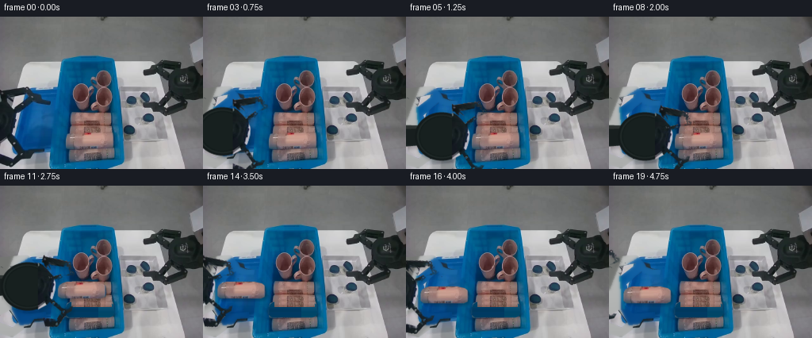
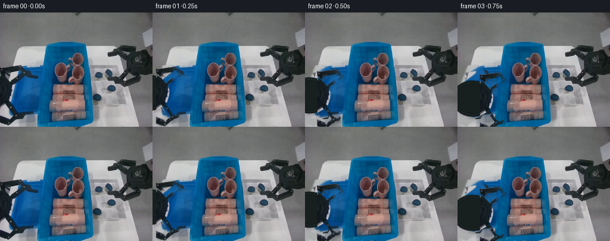
展开代码变化
--- 上一保存版本
+++ 本次保存版本
@@ -33,6 +33,12 @@
# Extend removal by one pixel to eliminate antialiased old silhouettes.
oldmask=np.asarray(Image.fromarray((oldmask*255).astype('uint8')).filter(ImageFilter.MaxFilter(3))).astype(float)/255
+# Remove any blue or white background accidentally included at the subpixel
+# outline; the complete silhouette above is still used for background recovery.
+v=A.astype(float)
+metal=np.clip((112-v.max(2))/22,0,1)*np.clip((28-(v[:,:,2]-v[:,:,0]))/13,0,1)
+upper*=metal; lower*=metal
+
# Restore only the small regions revealed by the departing left hand.
# The tray is the same rigid tray, with its observed rim and interior texture.
yy,xx=np.mgrid[:H,:W]
@@ -44,7 +50,7 @@
outside=xx<tableedge
floor=np.stack([123-.08*yy,125-.08*yy,122-.08*yy],axis=-1)
fill[outside]=floor[outside]
-traypoly=poly_mask([(6,96),(77,90),(68,170),(25,176),(15,161),(14,116)])>.5
+traypoly=poly_mask([(36,91),(77,90),(68,170),(25,176),(15,156),(15,113),(20,101)])>.5
# Sample the existing unobstructed blue floor, not a synthetic texture.
for y in range(H):
for x in range(W):
@@ -52,7 +58,7 @@
sx=int(np.clip(45+(x-40)*.27,35,61)); sy=int(np.clip(y,116,156))
fill[y,x]=A[sy,sx]
# The left rim runs behind the occluding wrist.
-rim=(np.abs(xx-(16+(yy-135)*.12))<2)&(yy>=108)&(yy<166)
+rim=(np.abs(xx-(16+(yy-135)*.12))<1.3)&(yy>=114)&(yy<156)
fill[rim]=[0,108,153]
# Solve a local smooth continuation around the outline, seeded with the known surface.
known=oldmask<.03
候选 05播放与检查图
点击播放 · 原生 RGB 像素
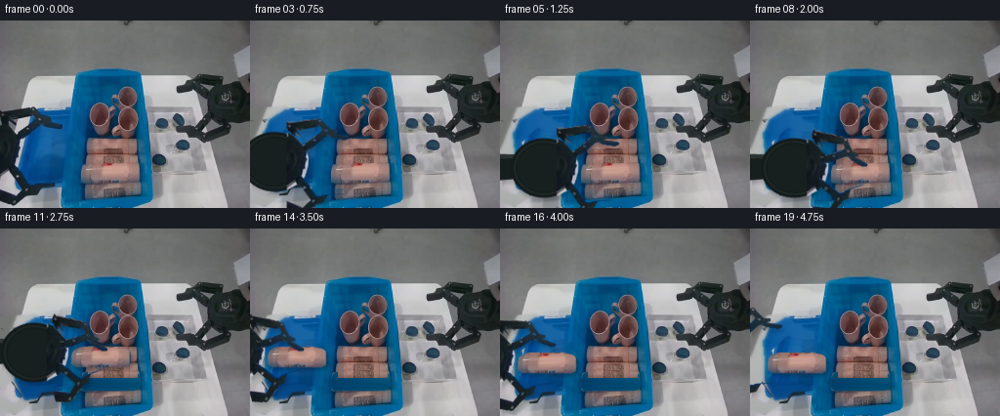
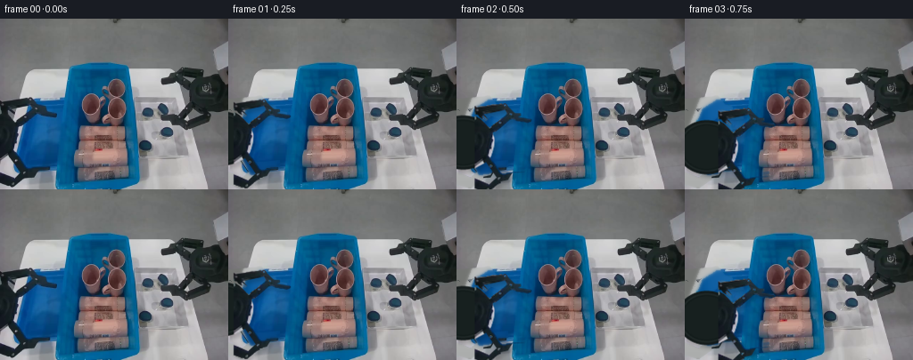
展开代码变化
--- 上一保存版本
+++ 本次保存版本
@@ -22,21 +22,22 @@
upperpolys=[[(0,91),(33,88),(37,91),(35,96),(6,102),(0,101)],
[(2,98),(9,100),(15,107),(13,109),(5,104)],
[(10,119),(36,99),(42,100),(43,104),(19,125),(13,124)],
- [(31,91),(35,90),(44,99),(46,103),(53,106),(64,107),(63,111),(51,111),(41,107),(37,101)]]
+ [(31,91),(35,90),(44,99),(46,100),(52,100),(52,103),(48,104),(53,105),(64,106),(64,109),(59,111),(48,109),(40,107),(37,101)]]
lowerpolys=[[(8,148),(14,146),(29,162),(39,162),(55,160),(57,160),(57,166),(42,167),(37,175),(28,177)],
[(0,173),(16,180),(25,172),(29,173),(29,180),(15,190),(0,185)]]
palmpoly=[(0,103),(6,106),(13,113),(19,120),(22,128),(22,138),(18,149),(11,156),(0,162)]
upper=np.maximum.reduce([poly_mask(p) for p in upperpolys])
lower=np.maximum.reduce([poly_mask(p) for p in lowerpolys])
palm=poly_mask(palmpoly)
-oldmask=np.maximum.reduce([upper,lower,palm])
+removal_extra=poly_mask([(29,89),(36,87),(44,97),(52,99),(54,104),(65,106),(65,112),(57,113),(49,112),(38,108),(21,124),(13,125),(8,116)])
+oldmask=np.maximum.reduce([upper,lower,palm,removal_extra])
# Extend removal by one pixel to eliminate antialiased old silhouettes.
oldmask=np.asarray(Image.fromarray((oldmask*255).astype('uint8')).filter(ImageFilter.MaxFilter(3))).astype(float)/255
# Remove any blue or white background accidentally included at the subpixel
# outline; the complete silhouette above is still used for background recovery.
v=A.astype(float)
-metal=np.clip((112-v.max(2))/22,0,1)*np.clip((28-(v[:,:,2]-v[:,:,0]))/13,0,1)
+metal=np.clip((125-v.max(2))/25,0,1)
upper*=metal; lower*=metal
# Restore only the small regions revealed by the departing left hand.
@@ -83,9 +84,10 @@
val=A[sy,x].astype(float)
val*=1-.035*max(0,y-148)
else:
- sx=148 if x>123 else 79
- val=A[min(y,166),sx].astype(float)
- val=val*.77
+ u=(x-83)/61
+ left=A[min(y,165),79].astype(float)
+ right=A[min(y,165),148].astype(float)
+ val=(left*(1-u)+right*u)*.84
clean[y,x]=(A[y,x]*(1-bm[y,x])+val*bm[y,x]).astype('uint8')
clean=Image.fromarray(clean)
可观测工具轨迹
实际执行的命令与返回图片。
命令 1exit 0
/bin/bash -lc "ls -la && cat prompt.txt && printf '\\n---RULES---\\n' && cat GENERATION_RULES.md"
命令 2exit 0
/bin/bash -lc "cat task_spec.json && cat artifact_io.py && python - <<'PY'
from PIL import Image
im=Image.open('first_frame.png'); print(im.size)
im.resize((1024,768)).save('.tmp/first_large.png')
PY"命令 3exit 0
/bin/bash -lc "python - <<'PY'
from PIL import Image
im=Image.open('first_frame.png')
im.crop((0,80,80,192)).resize((480,672)).save('.tmp/gripper.png')
im.crop((77,116,146,186)).resize((552,560)).save('.tmp/products.png')
PY"命令 4exit 0
/bin/bash -lc "cat > generate.py <<'PY'
from pathlib import Path
import numpy as np
from PIL import Image, ImageDraw, ImageFilter
import artifact_io
ROOT=Path(__file__).resolve().parent
im=Image.open(ROOT/'first_frame.png').convert('RGB')
A=np.asarray(im).copy(); W,H=im.size; S=4
def poly_mask(points):
m=Image.new('L',(W*S,H*S)); ImageDraw.Draw(m).polygon([(int(x*S),int(y*S)) for x,y in points], fill=255)
return np.asarray(m.resize((W,H),Image.Resampling.LANCZOS)).astype(float)/255
def region(poly):
m=poly_mask(poly)
# Preserve the openings in the mechanical links.
v=A.max(2)
dark=np.clip((99-v)/24,0,1)
return m*dark
upper=region([(0,88),(35,87),(44,96),(53,99),(54,105),(65,107),(65,115),(50,113),(40,108),(21,123),(12,122),(0,108)])
lower=region([(0,145),(15,148),(31,161),(59,158),(59,167),(42,169),(38,177),(28,180),(14,191),(0,183)])
palm=region([(0,104),(8,106),(17,117),(23,127),(22,141),(17,150),(10,157),(0,163)])
# Preserve metallic fasteners within the photographed links.
for arr,pts in [(upper,[(34,92),(42,102),(21,115)]),(lower,[(15,161),(14,185)])]:
for x,y in pts:
yy,xx=np.mgrid[:H,:W]; arr[((xx-x)**2+(yy-y)**2)<2.1]=1
oldmask=np.maximum.reduce([upper,lower,palm])
# Restore only the small regions revealed by the departing left hand.
# The tray is the same rigid tray, with its observed rim and interior texture.
yy,xx=np.mgrid[:H,:W]
bg=A.astype(float).copy()
fill=np.empty_like(bg)
fill[:]=np.stack([203-0.17*yy,205-0.17*yy,204-0.17*yy],axis=-1)
# Area outside the fixed work surface.
tableedge=28-(yy-60)*.39
outside=xx<tableedge
floor=np.stack([123-.08*yy,125-.08*yy,122-.08*yy],axis=-1)
fill[outside]=floor[outside]
traypoly=poly_mask([(6,96),(77,90),(68,170),(25,176),(15,161),(14,116)])>.5
# Sample the existing unobstructed blue floor, not a synthetic texture.
for y in range(H):
for x in range(W):
if traypoly[y,x]:
sx=int(np.clip(45+(x-40)*.27,35,61)); sy=int(np.clip(y,116,156))
fill[y,x]=A[sy,sx]
# The left rim runs behind the occluding wrist.
rim=(np.abs(xx-(16+(yy-135)*.12))<2)&(yy>=108)&(yy<166)
fill[rim]=[0,108,153]
# Solve a local smooth continuation around the outline, seeded with the known surface.
known=oldmask<.03
work=np.where(known[:,:,None],A,fill)
for k in range(110):
neighbor=(np.roll(work,1,0)+np.roll(work,-1,0)+np.roll(work,1,1)+np.roll(work,-1,1))*.25
neighbor[:,0]=(work[:,1]+np.roll(work[:,0],1,0)+np.roll(work[:,0],-1,0))/3
work=np.where(known[:,:,None],A,.84*neighbor+.16*fill)
bg=Image.fromarray(np.clip(A*(1-oldmask[:,:,None])+work*oldmask[:,:,None],0,255).astype('uint8'))
# Photographed personal-care bottle, which retains its texture, orientation and shape.
bottlepoly=[(88,147),(94,145),(130,145),(139,147),(143,150),(144,159),(143,164),(138,166),(87,166),(83,163),(83,153),(85,149)]
bm=poly_mask(bottlepoly)
bottle=Image.fromarray(np.dstack([A,(bm*255).astype('uint8')]),'RGBA')
# Restore bin floor and the back edge of the occluded bottle after lifting.
clean=np.asarray(bg).copy()
for y in range(144,169):
for x in range(81,146):
if bm[y,x]>.001:
if y<153 and x>=90 and x<=140:
sy=min(146,139+int((y-144)*.75))
val=A[sy,x].astype(float)
val*=1-.035*max(0,y-148)
else:
sx=148 if x>123 else 79
val=A[min(y,166),sx].astype(float)
val=val*.77
clean[y,x]=(A[y,x]*(1-bm[y,x])+val*bm[y,x]).astype('uint8')
clean=Image.fromarray(clean)
# Full wrist continuation: only the previously off-screen part is reconstructed.
CW=356; OFF=100
body=Image.new('RGBA',(CW*S,H*S))
d=ImageDraw.Draw(body)
def ellipse(box,fill): d.ellipse(tuple(int(z*S) for z in box),fill=fill)
def polygon(p,fill):d.polygon([(int((x+OFF)*S),int(y*S)) for x,y in p],fill=fill)
polygon([(-105,118),(-34,119),(-26,125),(-27,143),(-103,149)],(23,30,30,255))
polygon([(-103,118),(-35,119),(-35,123),(-103,124)],(43,49,48,255))
for r in range(34,0,-1):
c=int(26+7*(1-r/34)); ellipse((OFF-13-r,133-r*.89,OFF-13+r,133+r*.89),(c-5,c+2,c+2,255))
# An observed-only overlay keeps the right face exactly photographic.
bodyarr=np.asarray(body.resize((CW,H),Image.Resampling.LANCZOS)).copy()
bodyarr[:,OFF:OFF+W]=np.dstack([A,(palm*255).astype('uint8')]) + 0 # replace with photographed right half
# Above assignment wipes right synthetic geometry beyond source; this is intended.
body=Image.fromarray(bodyarr,'RGBA').resize((CW*S,H*S),Image.Resampling.BICUBIC)
def make_sprite(mask):
out=Image.new('RGBA',(CW,H)); out.paste(Image.fromarray(np.dstack([A,(mask*255).astype('uint8')]),'RGBA'),(OFF,0))
return out.resize((CW*S,H*S),Image.Resampling.BICUBIC)
top=make_sprite(upper); bottom=make_sprite(lower)
# Rigid affine motion of each hinge assembly, around its fixed wrist attachment.
def transform(sprite,dx,dy,angle=0,pivot=(0,0)):
th=np.deg2rad(angle); c=np.cos(th); s=np.sin(th)
px,py=pivot
# Inverse mapping from final screen position to source texture coordinates.
a,b=c,s; dd,e=-s,c
tx=(px-c*(px+dx)-s*(py+dy)+OFF)*S
ty=(py+s*(px+dx)-c*(py+dy))*S
return sprite.transform((W*S,H*S),Image.Transform.AFFINE,(a,b,tx,dd,e,ty),Image.Resampling.BICUBIC)
def bottle_transform(dx,dy):
return bottle.resize((W*S,H*S),Image.Resampling.BICUBIC).transform((W*S,H*S),Image.Transform.AFFINE,(1,0,-dx*S,0,1,-dy*S),Image.Resampling.BICUBIC)
def smooth(t):return t*t*(3-2*t)
def lerp(a,b,t): return a+(b-a)*smooth(t)
def state(i):
# approach; close; lift; transfer; lower; release; withdraw
if i<=5:
t=i/5;return lerp(0,58,t),lerp(0,18,t),0,0,0,0,False
if i<=8:
t=(i-5)/3;return 58,18,lerp(0,27,t),lerp(0,-19,t),0,0,False
if i<=10:
t=(i-8)/2;by=lerp(0,-24,t);return 58,18+by,27,-19,0,by,True
if i<=14:
t=(i-10)/4;bx=lerp(0,-65,t);return 58+bx,-6,27,-19,bx,-24,True
if i<=15:
t=i-14;by=lerp(-24,-18,t);return -7,18+by,27,-19,-65,by,True
if i<=17:
t=(i-15)/2;return -7,0,lerp(27,0,t),lerp(-19,0,t),-65,-18,True
t=(i-17)/2;return lerp(-7,-31,t),lerp(0,-8,t),0,0,-65,-18,True
frames=[A.copy()]
for i in range(1,20):
dx,dy,ta,ba,bx,by,moved=state(i)
canvas=(clean if moved else bg).resize((W*S,H*S),Image.Resampling.BICUBIC).convert('RGBA')
obj=bottle_transform(bx,by) if moved else None
if obj:
shadow=Image.new('RGBA',canvas.size,(0,0,0,0))
alpha=obj.getchannel('A').filter(ImageFilter.GaussianBlur(1.5*S))
# Soft contact shadow becomes detached slightly during the lifting phase.
alpha=alpha.point(lambda z:int(z*.23))
shifted=Image.new('L',canvas.size); shifted.paste(alpha,(2*S,3*S))
shadow.putalpha(shifted);canvas=Image.alpha_composite(canvas,shadow)
canvas=Image.alpha_composite(canvas,obj)
handparts=[transform(body,dx,dy),transform(top,dx,dy,ta,(0,114)),transform(bottom,dx,dy,ba,(0,151))]
hand=Image.new('RGBA',canvas.size)
for part in handparts:hand=Image.alpha_composite(hand,part)
hs=hand.getchannel('A').filter(ImageFilter.GaussianBlur(2*S)).point(lambda z:int(z*.17))
sh=Image.new('RGBA',canvas.size,(0,0,0,0)); shifted=Image.new('L',canvas.size);shifted.paste(hs,(2*S,4*S));sh.putalpha(shifted)
canvas=Image.alpha_composite(canvas,sh);canvas=Image.alpha_composite(canvas,hand)
frames.append(np.asarray(canvas.convert('RGB').resize((W,H),Image.Resampling.LANCZOS)))
frames=np.stack(frames).astype(np.uint8)
artifact_io.save(frames,ROOT)
PY
python generate.py"命令 5exit 0
/bin/bash -lc "python - <<'PY'
from PIL import Image
for i in [1,8,10,15]:Image.open(f'frames/{i:02}.png').resize((1024,768)).save(f'.tmp/frame{i}.png')
PY"命令 6exit 0
/bin/bash -lc "cp inspection.png .tmp/candidate01.png && cp generate.py .tmp/generate_candidate01.py
python - <<'PY'
p='generate.py'
s=open(p).read()
a=s.index('upper=region(');b=s.index('\\n# Restore only',a)
s=s[:a]+'''# Each visible link is cut out on its own, excluding all triangle openings.
upperpolys=[[(0,91),(33,88),(37,91),(35,96),(6,102),(0,101)],
[(2,98),(9,100),(15,107),(13,109),(5,104)],
[(10,119),(36,99),(42,100),(43,104),(19,125),(13,124)],
[(31,91),(35,90),(44,99),(46,103),(53,106),(64,107),(63,111),(51,111),(41,107),(37,101)]]
lowerpolys=[[(8,148),(14,146),(29,162),(39,162),(55,160),(57,160),(57,166),(42,167),(37,175),(28,177)],
[(0,173),(16,180),(25,172),(29,173),(29,180),(15,190),(0,185)]]
palmpoly=[(0,103),(6,106),(13,113),(19,120),(22,128),(22,138),(18,149),(11,156),(0,162)]
upper=np.maximum.reduce([poly_mask(p) for p in upperpolys])
lower=np.maximum.reduce([poly_mask(p) for p in lowerpolys])
palm=poly_mask(palmpoly)
oldmask=np.maximum.reduce([upper,lower,palm])
# Extend removal by one pixel to eliminate antialiased old silhouettes.
oldmask=np.asarray(Image.fromarray((oldmask*255).astype('uint8')).filter(ImageFilter.MaxFilter(3))).astype(float)/255
''' + s[b:]
# Replace shadow floor interpolation as removal area known will make bad gray edges? fine.
s=s.replace('for r in range(34,0,-1):\\n c=int(26+7*(1-r/34)); ellipse((OFF-13-r,133-r*.89,OFF-13+r,133+r*.89),(c-5,c+2,c+2,255))','''for r in range(34,0,-1):
c=int(25+8*(1-r/34)); ellipse((OFF-13-r,133-r*.89,OFF-13+r,133+r*.89),(c-5,c+2,c+2,255))
# Subtle casing ring, matching the narrow highlight already visible at frame left.
for r,col in [(31,(30,39,38,255)),(29,(20,29,28,255)),(27,(23,32,31,255))]:
ellipse((OFF-13-r,133-r*.89,OFF-13+r,133+r*.89),col)
''')
s=s.replace('lerp(0,27,t),lerp(0,-19,t)','lerp(0,20,t),lerp(0,-16,t)')
s=s.replace('27,-19','20,-16').replace('lerp(27,0,t),lerp(-19,0,t)','lerp(20,0,t),lerp(-16,0,t)')
a=s.index('frames=[A.copy()]')
s=s[:a]+'''frames=[A.copy()]
for i in range(1,20):
dx,dy,ta,ba,bx,by,moved=state(i)
canvas=(clean if moved else bg).convert('RGBA')
obj=bottle_transform(bx,by) if moved else None
if obj:
shadow=Image.new('RGBA',(W*S,H*S),(0,0,0,0))
alpha=obj.getchannel('A').filter(ImageFilter.GaussianBlur(1.5*S)).point(lambda z:int(z*.23))
shifted=Image.new('L',shadow.size); shifted.paste(alpha,(2*S,3*S))
shadow.putalpha(shifted)
canvas=Image.alpha_composite(canvas,shadow.resize((W,H),Image.Resampling.LANCZOS))
canvas=Image.alpha_composite(canvas,obj.resize((W,H),Image.Resampling.LANCZOS))
handparts=[transform(body,dx,dy),transform(top,dx,dy,ta,(0,114)),transform(bottom,dx,dy,ba,(0,151))]
hand=Image.new('RGBA',(W*S,H*S))
for part in handparts:hand=Image.alpha_composite(hand,part)
hs=hand.getchannel('A').filter(ImageFilter.GaussianBlur(2*S)).point(lambda z:int(z*.17))
sh=Image.new('RGBA',hand.size,(0,0,0,0)); shifted=Image.new('L',hand.size);shifted.paste(hs,(2*S,4*S));sh.putalpha(shifted)
canvas=Image.alpha_composite(canvas,sh.resize((W,H),Image.Resampling.LANCZOS))
canvas=Image.alpha_composite(canvas,hand.resize((W,H),Image.Resampling.LANCZOS))
frames.append(np.asarray(canvas.convert('RGB')))
frames=np.stack(frames).astype(np.uint8)
artifact_io.save(frames,ROOT)
'''
open(p,'w').write(s)
PY
python generate.py"命令 7exit 0
/bin/bash -lc "python - <<'PY'
p='generate.py';s=open(p).read();s=s.replace(\"traypoly=poly_mask([(6,96),(77,90),(68,170),(25,176),(15,161),(14,116)])>.5\", \"traypoly=poly_mask([(36,91),(77,90),(68,170),(25,176),(15,156),(15,113),(20,101)])>.5\")
s=s.replace(\"palm=poly_mask(palmpoly)\\noldmask\", \"palm=poly_mask(palmpoly)\\noldmask\")
pos=s.index('\\n# Restore only')
s=s[:pos]+'''\\n# Remove any blue or white background accidentally included at the subpixel
# outline; the complete silhouette above is still used for background recovery.
v=A.astype(float)
metal=np.clip((112-v.max(2))/22,0,1)*np.clip((28-(v[:,:,2]-v[:,:,0]))/13,0,1)
upper*=metal; lower*=metal
''' + s[pos:]
s=s.replace('rim=(np.abs(xx-(16+(yy-135)*.12))<2)&(yy>=108)&(yy<166)','rim=(np.abs(xx-(16+(yy-135)*.12))<1.3)&(yy>=114)&(yy<156)')
# Set contact on lower edge accurately. Upper fingertip rotates to y149 versus bottle top147, close enough.
# Hide full background resurrection step by only reconstructing newly uncovered bin floor.
open(p,'w').write(s)
PY
python generate.py
python - <<'PY'
from PIL import Image
im=Image.open('frames/08.png');im.resize((1024,768)).save('.tmp/refined_grasp.png')
im=Image.open('frames/19.png');im.resize((1024,768)).save('.tmp/refined_last.png')
PY"命令 8exit 0
/bin/bash -lc "python - <<'PY'
from PIL import Image
import numpy as np
im=np.asarray(Image.open('first_frame.png'))
for y in [98,102,106,108,110]:
print(y,[(x,im[y,x].tolist()) for x in [35,40,44,48,52,55,60,63]])
PY"命令 9exit 0
/bin/bash -lc "python - <<'PY'
p='generate.py';s=open(p).read();s=s.replace('metal=np.clip((112-v.max(2))/22,0,1)*np.clip((28-(v[:,:,2]-v[:,:,0]))/13,0,1)','metal=np.clip((125-v.max(2))/25,0,1)')
s=s.replace('[(31,91),(35,90),(44,99),(46,103),(53,106),(64,107),(63,111),(51,111),(41,107),(37,101)]]','[(31,91),(35,90),(44,99),(46,100),(52,100),(52,103),(48,104),(53,105),(64,106),(64,109),(59,111),(48,109),(40,107),(37,101)]]')
# Recover remains of old hand, including tips and the left silhouette edges.
s=s.replace('oldmask=np.maximum.reduce([upper,lower,palm])', '''removal_extra=poly_mask([(29,89),(36,87),(44,97),(52,99),(54,104),(65,106),(65,112),(57,113),(49,112),(38,108),(21,124),(13,125),(8,116)])
oldmask=np.maximum.reduce([upper,lower,palm,removal_extra])''')
# Simpler smoothly varying revealed bin floor, avoiding a false division line.
a=s.index(' else:\\n sx=148');b=s.index(' clean[y,x]',a)
s=s[:a]+''' else:
u=(x-83)/61
left=A[min(y,165),79].astype(float)
right=A[min(y,165),148].astype(float)
val=(left*(1-u)+right*u)*.84
''' +s[b:]
# Track the small uncovered shadow boundary, blend the reveal at lower side.
s=s.replace(\"canvas=(clean if moved else bg).convert('RGBA')\", \"canvas=(clean if moved else bg).convert('RGBA')\")
open(p,'w').write(s)
PY
python generate.py
python - <<'PY'
from PIL import Image
Image.open('frames/08.png').resize((1024,768)).save('.tmp/grasp_final.png')
PY"命令 10exit 0
/bin/bash -lc "python - <<'PY'
from PIL import Image
import numpy as np
from pathlib import Path
p=Path('.')
f=np.stack([np.asarray(Image.open(p/'frames'/f'{i:02d}.png').convert('RGB')) for i in range(20)])
a=np.asarray(Image.open('first_frame.png').convert('RGB'))
assert f.shape==(20,192,256,3) and f.dtype==np.uint8
assert np.array_equal(f[0],a)
assert all(np.array_equal(fr[:,160:],a[:,160:]) for fr in f)
data=np.load('pixels.npz')['pixels']; assert data.shape==(192,256,20)
print('PASS: 20 RGB frames, 256Ã192; first frame identical; right workspace unchanged.')
print('Saved: pixels.npz, frames/00.pngâ19.png, index.html, inspection.png; runnable generate.py.')
PY"视觉工具实际返回图片 1

视觉工具实际返回图片 2
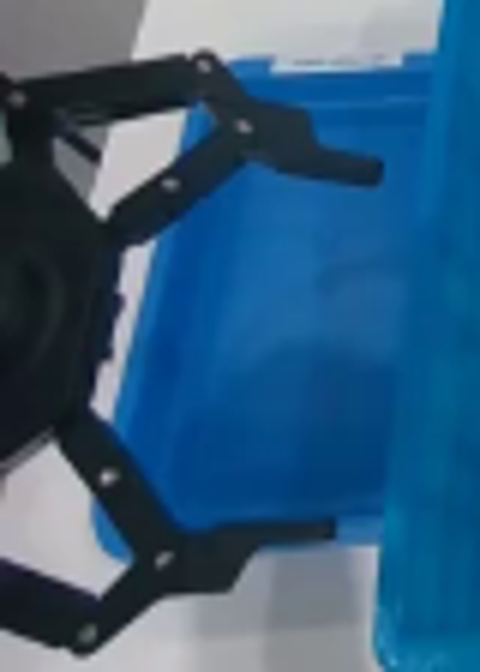
视觉工具实际返回图片 3
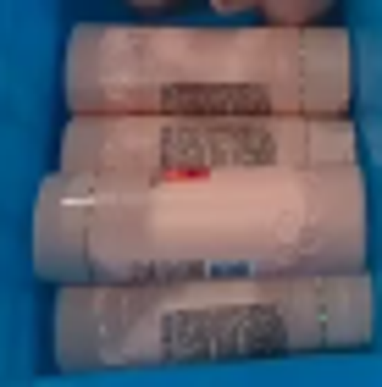
视觉工具实际返回图片 4

视觉工具实际返回图片 5
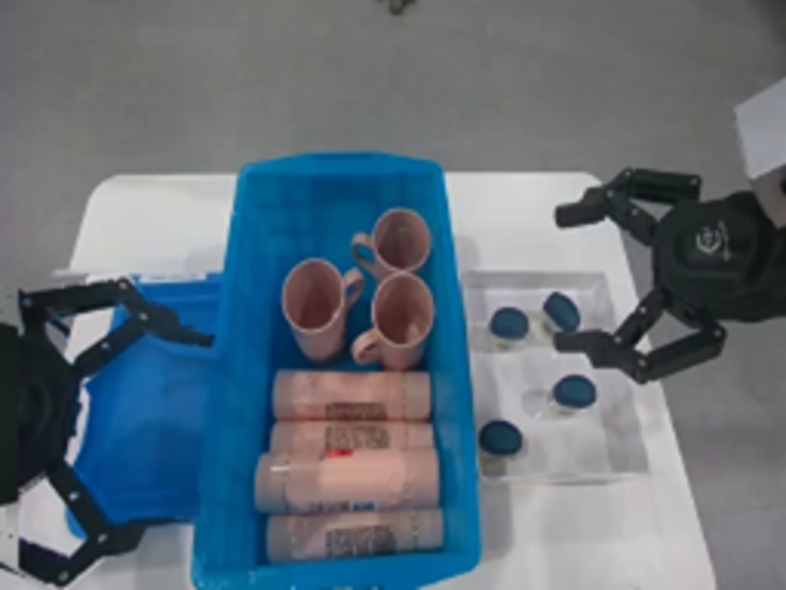
视觉工具实际返回图片 6
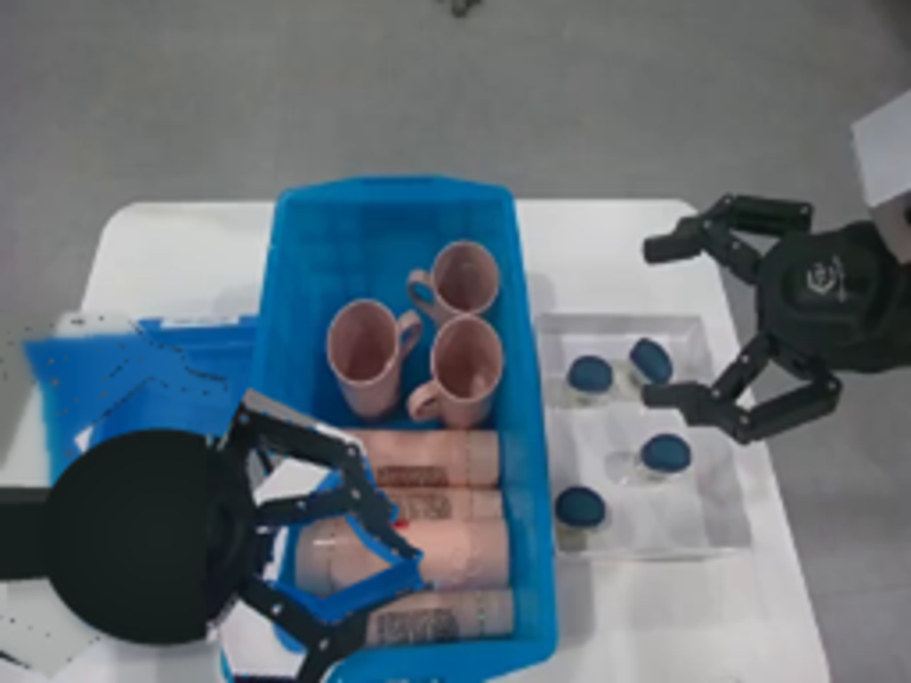
视觉工具实际返回图片 7
视觉工具实际返回图片 8
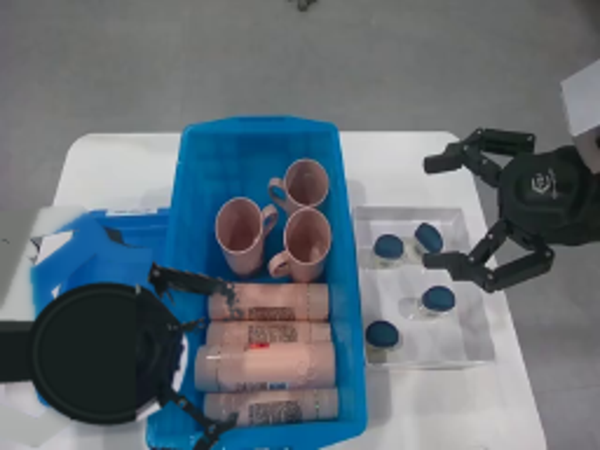
视觉工具实际返回图片 9
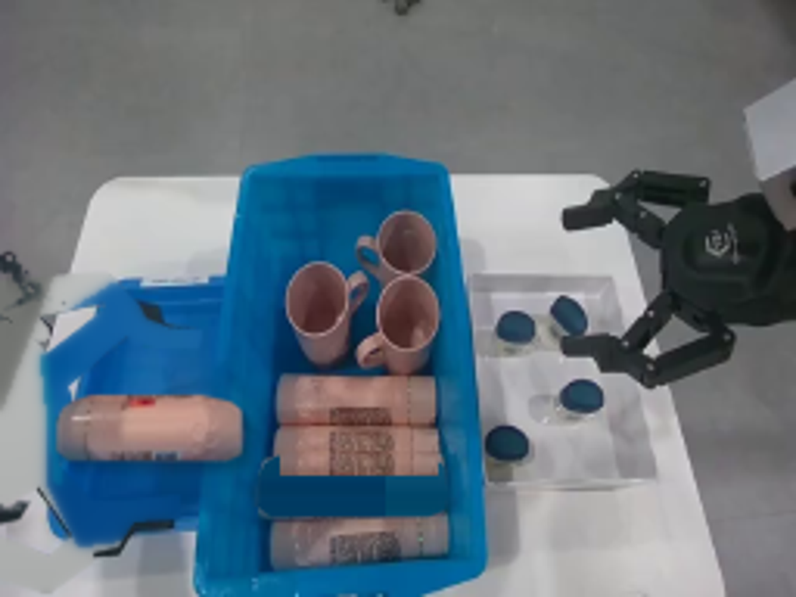
视觉工具实际返回图片 10
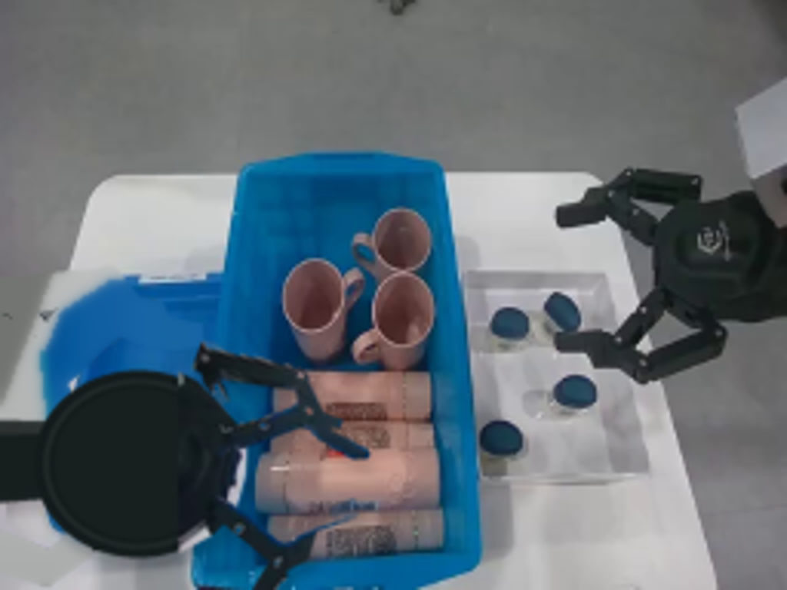
保存候选 5 份；完成命令 10 次；可验证图片返回 10 张。原始 API 响应与完整日志保留在本地。